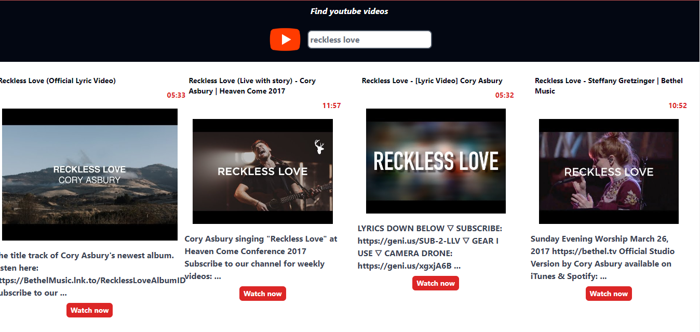

<div class="px-4 md:px-16 font-mono text-gray-900 bg-gradient-to-b from-dark-gray via-light-gray to-dark-gray">
    <div class="py-32 flex-col items-center justify-center p-4">
        <p class="text-2xl md:text-4xl font-sans text-center mb-4 text-gray-900 font-bold">
            Youtube Clone
        </p>
        <p class="mt-4 w-12 mx-auto border-2 p-1 bg-lemon-blue rounded-lg border-lemon-blue"></p>
        <div class="flex items-center justify-center mt-4 font-mono">
            <div class="grid grid-cols md:grid-cols-2 items-center">
                <div class="p-4 md:p-12">
                    
                </div>
                <div class="text-sm md:text-md p-2 text-justify">
                    <div class="text-gray-700 text-center p-4 md:p-8 text-2xl md:4xl font-bold">
                        Building the Future: YouTube Web App Clone
                    </div>
                    <p class="p-2 mt-4">
                        Developing the 'YouTube Web App Clone' project was a valuable learning experience where I
                        focused on
                        creating a user-friendly application emulating YouTube's real-time search feature. Through
                        mastering
                        TypeScript and APIs, I efficiently implemented search algorithms to fetch and display instant
                        video
                        results. This endeavor improved my technical skills in front-end technologies like HTML, CSS,
                        and
                        TypeScript, and deepened my understanding of responsive design principles. It provided insights
                        into
                        user interaction design and scalable web application development, highlighting my commitment to
                        innovation in web technology.
                    </p>
                    <div class="flex justify-center p-2">
                        <button
                            class="p-2 py-2 border-2 border-lemon-green bg-lemon-blue text-white font-sans rounded-md cursor-pointer">
                            <a [routerLink]="['/youtube']">
                                Overview
                            </a>
                        </button>
                    </div>
                </div>
            </div>
        </div>
    </div>
</div>